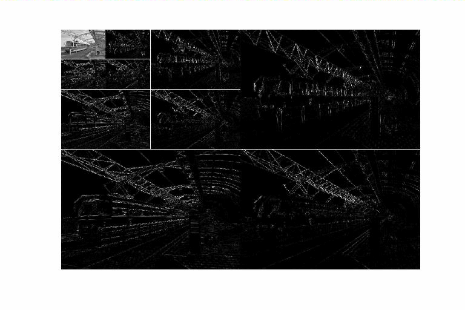
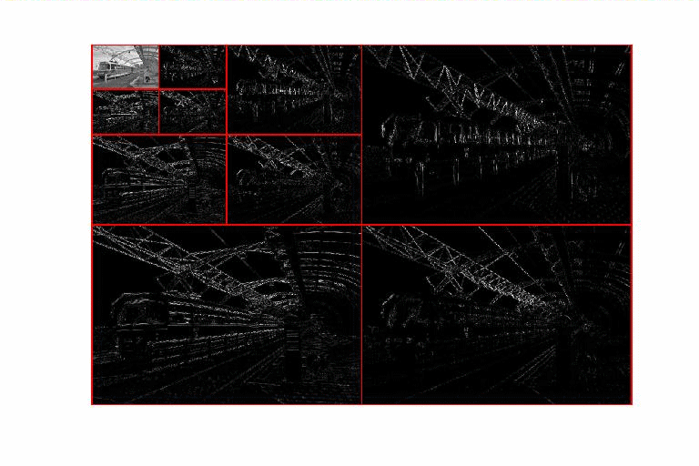
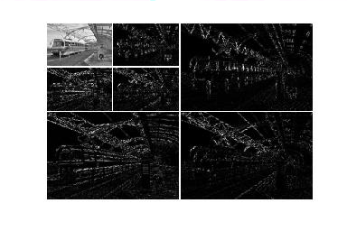
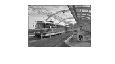
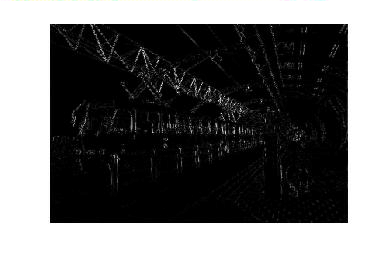
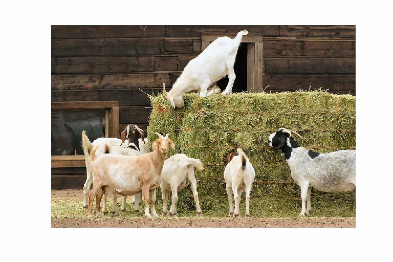
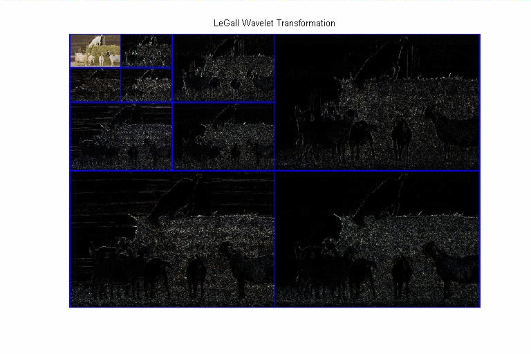

| DiscreteWavelets Toolbox |
Plot a two-dimensional wavelet transfomration
WaveletDensityPlot(wt,its)
WaveletDensityPlot(wt,its,options)
WaveletDensityPlot(wt,its) takes either a matrix or a three-dimensional array wt, presumably obtained by computing the wavelet transformation of some matrix or three-dimensional array, respectively, and a number of iterations its, and plots wt with each portion of the transformation separated by grid lines.
WaveletDensityPlot(wt,its,options) allows the user to set several parameters. See Optional Arguments for more details.
There are seven optional arguments that can be set for WaveletVectorPlot. The order of the parameters does not matter in the function call, but you must follow the standard convention 'Option', 'Value' when invoking the parameters.
'Region' can be set to either 'All' (default), 'Blur', 'Vertical', 'Horizontal', or 'Diagonal'. If 'Region' is set to 'Blur', the routine plots the lowpass portion of the transform. For the other non-default cases, the routine looks for the value of 'Iteration' (see below) and then plots the selected portion of wt.
'Iteration' can be set to 'All' (default) or any positive integer 1,2,...,its. This value is used if 'Region' has been set to 'Blur', 'Vertical', 'Horizontal', or 'Diagonal' to plot that particular region. If 'Region' is set to 'All' and 'Iteration' is set to i, then the routine plots the lowpass portion and highpass portions k=i,...,its.
'DivideLines' can be set to 'True' (default) or 'False' in order to show or hide, respectively, gridlines dividing the different portions of the transformation.
'DivideLinesColor' is a length three vector whose entries are in the interval [0,1] that serves as the color of the gridlines. The default color of 'DivideLinesColor' is [1 1 1] (white).
'DivideLinesThickness' can be set to either a nonnegative integer p (default is 1) or a vector p of length its. In the former case, all divide lines are drawn at thickness p. In the latter case, the divide lines for iteration i are set to thickness p(i), where i=1,2,...,its.
A plot title can be added using the 'Title' option. For example, WaveletDensityPlot(wt,its,'Title','Here is a Picture') adds a title to the plot.
Magnification can be set to make the output image size smaller or larger. The default value is 1 and if set, the value must be a positive number.
WaveletDensityPlot can plot color transformations. The input wt must be a three-dimensional array with depth three. It is assumed that wt(:,:,1), wt(:,:,2), and wt(:,:,3) hold the red, green, and blue portions of the transformations, respectively.
First, we read an image and compute three iterations of its wavelet transformation. Different examples will illustrate the different parameters that can be set with WaveletDensityPlot.
gry=ImageNames('ImageType','GrayScale'); %Get all grayscale image files included with the toolbox
A=ImageRead(gry{17}); %Read an image file
ImagePlot(A); %Plot the image file
[h,ht]=CDF97(); %Use the CDF97 filter for the computations.
wt=BWT2D(A,h,ht,3); %Compute four iterations of the transformation
WaveletDensityPlot(wt,3,'Title','Three Iterations Using CDF97()');
Adjust the thickness of the divide lines
WaveletDensityPlot(wt,3,'DivideLinesThickness',[2 2 2]);
We can change the color of the divide lines as well:
WaveletDensityPlot(wt,3,'DivideLinesThickness',[2 2 2],'DivideLinesColor',[1 0 0]);
Plot iterations 2 and 3
WaveletDensityPlot(wt,3,'Iteration',2,'DivideLinesThickness',[2 2 2]);
Plot the lowpass portion of the transformation in one plot and the vertical portion of the iteration 1 in another plot.
WaveletDensityPlot(wt,3,'Region','Blur'); figure; WaveletDensityPlot(wt,3,'Region','Vertical','Iteration',1);
|  |  |
Make the lowpass portion eight times as large so it is the same size as the original image.
WaveletDensityPlot(wt,3,'Region','Blur','Magnification',8);
WaveletDensityPlot also handles color images. First, load a color image and compute three iterations of a wavelet transformation.
clr=ImageNames('ImageType','Color'); %Find all color image file names that come with the toolbox
A=ImageRead(clr{6}); %Load a color image
ImagePlot(A); %Plot the image
[R,G,B]=Split3D(A); %Separate the channels
wtR=LWT2D(R,3); %Transform the red channel
wtG=LWT2D(G,3); %Transform the green channel
wtB=LWT2D(B,3); %Transform the blue channel
wt=Make3D(wtR,wtG,wtB); %Combine the channels

Plot the wavelet transform with a title, divide lines thickness adjusted appropriately, and divide lines color set to blue
WaveletDensityPlot(wt,3,'Title','LeGall Wavelet Transformation',... 'DivideLinesThickness',[2 2 2],'DivideLinesColor',[0 0 1]);
BWT2D, HWT2D, LWT2D, WT2D, WaveletVectorPlot
© 2007-2008 Patrick Van Fleet